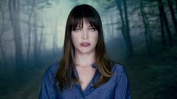
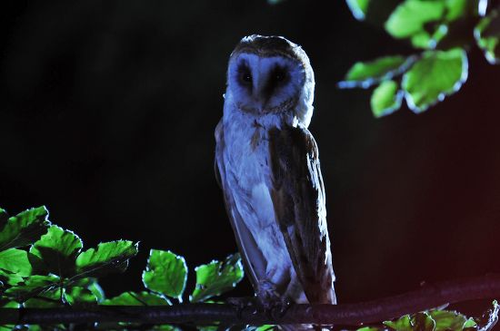
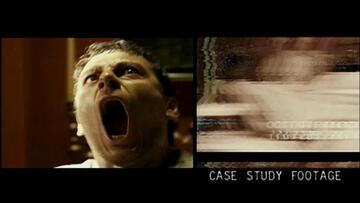
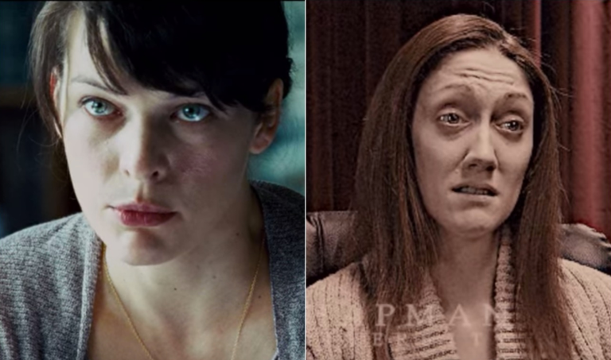

Plot
Chapman University hosts a televised interview with psychologist Dr. Abigail "Abbey" Tyler, who describes a series of events that occurred in Nome, Alaska, and culminated in an alleged alien abduction in October 2000.
In a re-enactment of events occurring in August 2000, Abbey's husband, Will, is murdered, leaving her to raise their two children, Ashley and Ronnie. Abbey tapes clinical hypnotherapy sessions with patients with shared experiences of a white owl staring at them as they sleep before creatures attempt to enter their homes. That night, Abbey is called by the police because one of her patients is holding his wife and two children at gunpoint. He states that he remembers everything and asks what "Zimabu Eter" means. Despite Abbey's pleas, he murders his family and commits suicide.
Abbey suspects that these patients may have been victims of an alien abduction. There is evidence that she may have been abducted as well, when an assistant gives her a tape recorder that plays the sound of something entering her home and attacking her. The attacker speaks an unknown language, and Abbey has no memory of the incident. Abel Campos, a colleague from Anchorage, is suspicious of the claims. Abbey calls upon Dr. Awolowa Odusami, a specialist in ancient languages and a contact of her late husband, to identify the language on the tape. Odusami identifies it as Sumerian.
Another patient, Scott, wishes to communicate. He admits that there was no owl and speaks of "them", but cannot remember anything further and begs Abbey to come to his home to hypnotize him. Under hypnosis, he begins hovering above his bed, while a voice speaking through Scott orders Abbey in Sumerian to end her study. Town sheriff August later arrives, telling her that Scott is paralyzed from the neck down. Believing Abbey to be responsible, August tries to arrest her, though Campos comes to Abbey's defense and confirms her story. August instead places Abbey under guard inside her house.
A police officer watches Abbey's house when a large black triangular object appears in the sky. The image distorts, but the officer is heard describing people being pulled out of the house and calling for backup. Deputies rush into the house, finding Ronnie and Abbey, who say Ashley was taken. A disbelieving and enraged August accuses Abbey of kidnapping and removes Ronnie from her custody.
Sometime later, Abbey undergoes hypnosis in an attempt to make contact with the beings responsible and reunite with her daughter. Hypnotized, Abbey recalls that she witnessed Ashley's abduction, and she was abducted as well. An alien presence communicates with Abbey, who begs for Ashley's return. It states Ashley will never come back before referring to itself as "God". When the encounter ends, Campos and Odusami rush over to the now unconscious Abbey and then notice something offscreen. The image distorts again as a voice yells "Zimabu Eter!" before resolving to show that all three are gone. Abbey wakes up in a hospital with a broken neck. August reveals that Will had committed suicide, and Abbey's belief that he was murdered was a delusion.
The re-enactment ends, and back in the present, Abbey states that she, Campos, and Odusami were abducted during the hypnosis session, but cannot recall their experiences. She is asked how anyone can take her claims of alien abduction seriously if she was proven to be delusional about her husband's death. Abbey states that she has no choice but to believe that Ashley is still alive before breaking down in tears.
Abbey is cleared of all charges against her and leaves Alaska for the East Coast, where her health deteriorates to the point of requiring constant care. Campos remains a psychologist, and Odusami becomes a professor at a Canadian university. Both men and August refuse to be involved with the interview, while Ronnie remains estranged from Abbey, still blaming her for Ashley's disappearance.